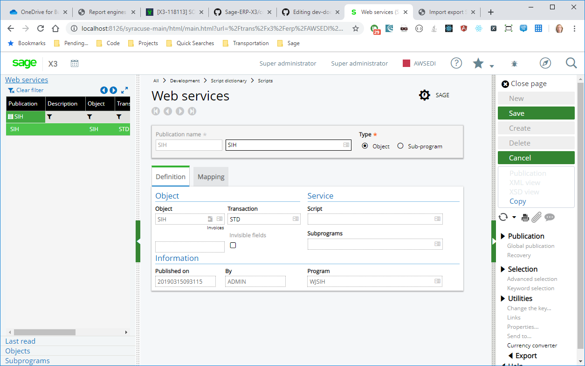
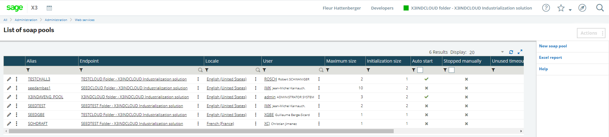
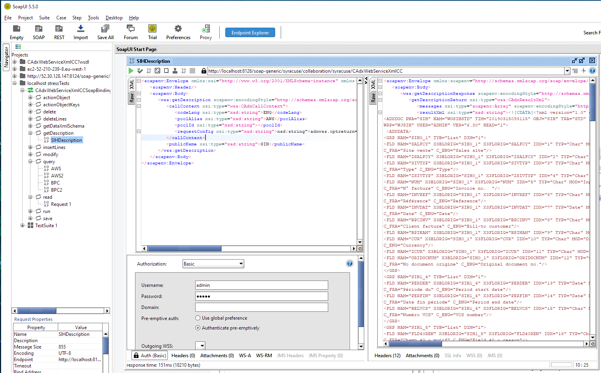
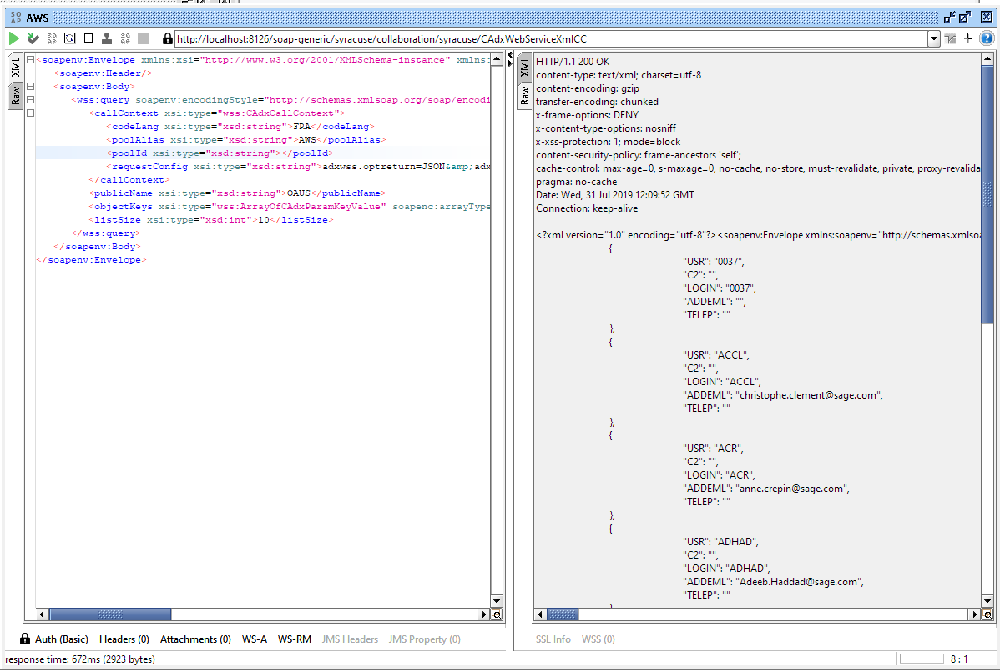
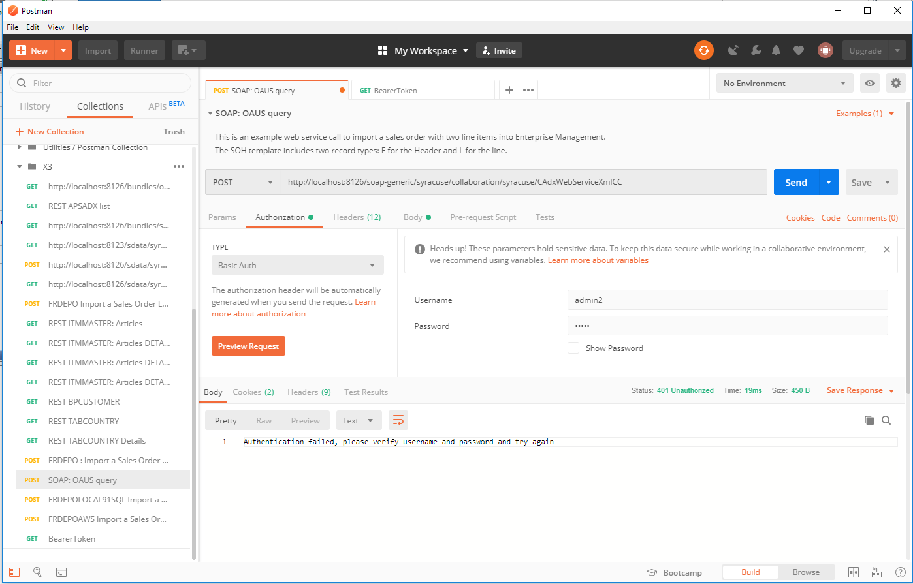

SOAP Web services implementation
The SOAP Web service implementation process is the same as the one that was available through the GESAWE function in V6.

You will be able to call the Web service after you publish it. Use the Publication function to do so.
Sage X3 Warehousing Web services work in a remote procedure call (RPC)/encoded style (versus Document/Literal). Each Web service is paired to a Sage X3 Warehousing program or subprogram with its own description.
Our /soap-wsdl/syracuse/collaboration/syracuse/CAdxWebServiceXmlCC?wsdl schema only describes the main actions available and the generic ones: CRUD actions and descriptions.
Sage X3 Warehousing uses RPC/encoded style to be able to consume published objects and subprograms from the supervisor as Web services. Web services are tightly linked to the application code.
Syracuse Web services definition
Important
Generic SOAP Web services are based on the use of classic clients. Calling Web services will consume legacy X3 objects and subprograms exactly like in V6.
A soapGeneric entity provides a description of the generic Web service.
Pool definition
The pools are defined in the SOAP classic pool administration function, managed by the Syracuse administration framework.

The size of each pool (number of channels) is no longer controlled by the license. Users can create as many channels as they want. Server sizing considerations need to be taken into account to size the pool. The license only controls the size of data exchanges. Read our Licensing control chapter.
Load balancer
Web services can work with the Syracuse load balancer mode.
A new property in the host definition entity allows you to define how many Web services dedicated processes should be set on a Syracuse environment (Number of Web services children). By default this property is set to 0, so it is necessary to configure it. Otherwise, each Web service call will generate the HTTP 500 error with the specific No Web services accepted message.
As explained in the pool definition document, each pool configuration is duplicated for each Web services child process host.
Licensing control
The licensing system does not limit the number of clients defined on pool configuration. The SOAP Web service implementation performed in the administration platform controls the data volume consumed by third party application consumers (in and out).
The license parameter is defined in this document.
Four variables are defined through the license: WSSIZELIMIT, WSPERIOD, WSGRACELIMIT and WSGRACESLOWDOWN.
WSSIZELIMIT: indicates the size (in Megabytes) of data that can be exchanged in incoming SOAP Web services (in and out)WSPERIOD: (a string that can be DAY, MONTH or YEAR) determines the period on which the size limitation appliesWSGRACELIMIT: (as a percentage) defines the oversize percentage allowed (typically 10%). If the maximum size is fixed at 1 MB/day, then:- 1 MB per day is possible without decreasing the speed of the Web services
- The next 10% (100Kb) is possible at a lower speed
- The service does not respond when the 1.1 MB limit is reached
WSGRACESLOWDOWN: indicates the rate used to decrease the speed of the Web services when the grace limit is reached. Taking into account the value of the above variablesWSSIZELIMITandWSGRACELIMIT, if for example,WSPERIODis equal to DAY and the value ofWSGRACESLOWDOWNis 5, then:- When the 1 MB limit is reached on a given day, the speed is divided by 5 until the end of the day
- Speed slowdown continues until the 1.1 MB limit is reached
- After that, the service stops
Web services calls
Requests
When you do a request to the http://[SYRACUSESERVER]:[PORT]/soap-generic/syracuse/collaboration/syracuse/CAdxWebServiceXmlCC URL, the general web service definition is available at this address: http://[SYRACUSESERVER]:[PORT]/soap-wsdl/syracuse/collaboration/syracuse/CAdxWebServiceXmlCC?wsdl.
This schema defines the available actions to get a description on a specific:
- method
- read data
- run program
- insert data
- save data
- delete data
Details and schema of each program are available when you interrogate the getDesciption method on the Web service and a specific program.
Web services call X3 programs that must be specifically published as Web services to be available.
Schema excerpt
/soap-wsdl/syracuse/collaboration/syracuse/CAdxWebServiceXmlCC?wsdl
CODECODE CODExml
<wsdl:definitions xmlns:apachesoap="http://xml.apache.org/xml-soap" xmlns:wss="http://www.adonix.com/WSS" xmlns:intf="http://www.adonix.com/WSS" xmlns:soapenc="http://schemas.xmlsoap.org/soap/encoding/" xmlns:wsdl="http://schemas.xmlsoap.org/wsdl/" xmlns:wsdlsoap="http://schemas.xmlsoap.org/wsdl/soap/" xmlns:xsd="http://www.w3.org/2001/XMLSchema" targetNamespace="http://www.adonix.com/WSS">
<script id="tinyhippos-injected"/>
<wsdl:types>
<schema xmlns="http://www.w3.org/2001/XMLSchema" targetNamespace="http://www.adonix.com/WSS">
<import namespace="http://schemas.xmlsoap.org/soap/encoding/"/>
<complexType name="CAdxCallContext">
<sequence>
<element name="codeLang" nillable="true" type="xsd:string"/>
<element name="poolAlias" nillable="true" type="xsd:string"/>
<element name="poolId" nillable="true" type="xsd:string"/>
<element name="requestConfig" nillable="true" type="xsd:string"/>
</sequence>
</complexType>
<complexType name="CAdxTechnicalInfos">
<sequence>
<element name="busy" type="xsd:boolean"/>
<element name="changeLanguage" type="xsd:boolean"/>
<element name="changeUserId" type="xsd:boolean"/>
<element name="flushAdx" type="xsd:boolean"/>
<element name="loadWebsDuration" type="xsd:double"/>
<element name="nbDistributionCycle" type="xsd:int"/>
<element name="poolDistribDuration" type="xsd:double"/>
<element name="poolEntryIdx" type="xsd:int"/>
<element name="poolExecDuration" type="xsd:double"/>
<element name="poolRequestDuration" type="xsd:double"/>
<element name="poolWaitDuration" type="xsd:double"/>
<element name="processReport" nillable="true" type="xsd:string"/>
<element name="processReportSize" type="xsd:int"/>
<element name="reloadWebs" type="xsd:boolean"/>
<element name="resumitAfterDBOpen" type="xsd:boolean"/>
<element name="rowInDistribStack" type="xsd:int"/>
<element name="totalDuration" type="xsd:double"/>
<element name="traceRequest" nillable="true" type="xsd:string"/>
<element name="traceRequestSize" type="xsd:int"/>
</sequence>
</complexType>
<complexType name="CAdxResultXml">
<sequence>
<element name="messages" nillable="true" type="wss:ArrayOfCAdxMessage"/>
<element name="resultXml" nillable="true" type="xsd:string"/>
<element name="status" type="xsd:int"/>
<element name="technicalInfos" nillable="true" type="wss:CAdxTechnicalInfos"/>
</sequence>
</complexType>
</schema>
</wsdl:types>
<wsdl:service name="CAdxWebServiceXmlCCService">
<wsdl:port binding="wss:CAdxWebServiceXmlCCSoapBinding" name="CAdxWebServiceXmlCC">
<wsdlsoap:address location="http://po027493:8126/soap-generic/syracuse/collaboration/syracuse/CAdxWebServiceXmlCC"/>
</wsdl:port>
<wsdl:documentation>
This SOAP Web service allows to call X3 subprograms and/or to manipulate X3 objects through CRUD and specifics methods
</wsdl:documentation>
</wsdl:service>
</wsdl:definitions>All the operations listed in the Tester forms section of the generic SOAP Web service documentation take several parameters.
Common SOAP parameters
callContext: this is a group of parameters where you need to define the following:codeLang(can be optional if HTTP header accept-language is used, otherwise, it is mandatory): this parameter can take X3 language format (FRA, ENG, BRI...). If a user decides to use accept-language HTTP header, then ISO format is necessary (fr-FR, en-US, en-GB...).codeUseris deprecated and no longer used: The Sage X3 Warehousing user is determined by the Administration user endpoint login map.passwordis deprecated as well.poolAliasis mandatory, it corresponds to theAliasdefined in the pool configuration.poolIdis optional; it allows you to force a specific client through a pool definition list. If nopoolIdis set here, the client selection is done with an intelligent pool distributor algorithm (Read our Client selection algorithm chapter).
requestConfig: a set of configurations separated by the & character:adxwss.trace.on: value on to be activated. This returns a detailed trace of your call in the http response obtained when invoking the SOAP Web services.adxwss.optreturn: Can be XML or JSON. The default value is XML.: Can be true or false. The response flow is formatted to be more readable when set to true.
callContext exampleCODECODE CODExml
<callContext xsi:type="wss:CAdxCallContext">
<codeLang xsi:type="xsd:string">FRA</codeLang>
<poolAlias xsi:type="xsd:string">SEED</poolAlias>
<poolId xsi:type="xsd:string"></poolId>
<requestConfig xsi:type="xsd:string"><![CDATA[adxwss.trace.on=on&adxwss.optreturn=JSON&adxwss.beautify=true]]></requestConfig>
</callContext>publicName(mandatory) corresponds to the public name declaration done in GESAWE X3 function.
publicName example
CODECODE CODExml
<publicName xsi:type="xsd:string">WSBPC</publicName>requestConfig valuesCODECODE CODExml
<requestConfig xsi:type="xsd:string"><![CDATA[adxwss.trace.on=on&adxwss.optreturn=JSON&adxwss.beautify=true]]></requestConfig>adxwss.trace.on= [on/off] (default : off) Verbose traces can be switch to on if you want to debug you webservice during development.
adxwss.optreturn= [JSON/XML]
CODECODE CODExml
<resultXml xsi:type="xsd:string"><![CDATA[
<RESULT DIM="10000" SIZE="30">
<LIN NUM="1">
<FLD NAME="USR" TYPE="Char">0037</FLD>
<FLD NAME="C2" TYPE="Char"/>
<FLD NAME="LOGIN" TYPE="Char">0037</FLD>
<FLD NAME="ADDEML" TYPE="Char"/>
<FLD NAME="TELEP" TYPE="Char"/>
</LIN>
<LIN NUM="2">
<FLD NAME="USR" TYPE="Char">ACCL</FLD>
<FLD NAME="C2" TYPE="Char"/>
<FLD NAME="LOGIN" TYPE="Char">ACCL</FLD>
<FLD NAME="ADDEML" TYPE="Char">Christophe.Test@sage.com</FLD>
<FLD NAME="TELEP" TYPE="Char"/>
</LIN>
</RESULT>
]]></resultXml>CODECODE CODExml
<resultXml xsi:type="xsd:string">[
{
"USR": "0037",
"C2": "",
"LOGIN": "0037",
"ADDEML": "",
"TELEP": ""
},
{
"USR": "ACCL",
"C2": "",
"LOGIN": "ACCL",
"ADDEML": "Christophe.Test@sage.com",
"TELEP": ""
},
{
"USR": "ADHAD",
"C2": "",
"LOGIN": "ADHAD",
"ADDEML": "Ariel.Dupont@sage.com",
"TELEP": ""
}
]</resultXml>This example launches a request to get the description of the SIH object previously published:
CODECODE CODExml
<soapenv:Envelope xmlns:xsi="http://www.w3.org/2001/XMLSchema-instance" xmlns:xsd="http://www.w3.org/2001/XMLSchema" xmlns:soapenv="http://schemas.xmlsoap.org/soap/envelope/" xmlns:wss="http://www.adonix.com/WSS">
<soapenv:Header/>
<soapenv:Body>
<wss:getDescription soapenv:encodingStyle="http://schemas.xmlsoap.org/soap/encoding/">
<callContext xsi:type="wss:CAdxCallContext">
<codeLang xsi:type="xsd:string">ENG</codeLang>
<poolAlias xsi:type="xsd:string">AWS</poolAlias>
<poolId xsi:type="xsd:string"></poolId>
<requestConfig xsi:type="xsd:string">xsd:string">adxwss.optreturn=JSON&adxwss.beautify=true</requestConfig>
</callContext>
<publicName xsi:type="xsd:string">SIH</publicName>
</wss:getDescription>
</soapenv:Body>
</soapenv:Envelope>CODECODE CODExml
<soapenv:Envelope xmlns:soapenv="http://schemas.xmlsoap.org/soap/envelope/" xmlns:xsd="http://www.w3.org/2001/XMLSchema" xmlns:xsi="http://www.w3.org/2001/XMLSchema-instance" xmlns:soapenc="http://schemas.xmlsoap.org/soap/encoding/" xmlns:wss="http://www.adonix.com/WSS">
<soapenv:Body>
<wss:getDescriptionResponse soapenv:encodingStyle="http://schemas.xmlsoap.org/soap/encoding/">
<getDescriptionReturn xsi:type="wss:CAdxResultXml">
<messages xsi:type="soapenc:Array" soapenv:encodingStyle="http://schemas.xmlsoap.org/soap/encoding/" soapenc:arrayType="wss:CAdxMessage[0]"/>
<resultXml xsi:type="xsd:string"><![CDATA[<?xml version="1.0" encoding="utf-8" ?>
<ADXDOC PNA="SIH" NAM="WOSIHSTD" TIM="20190315093115" OBJ="SIH" TRA="STD" FOL="REPOSX3" SOL="REPOSX3"
WRP="WJSIH" USER="ADMIN" VER="6.30" HEAD="1">
<ADXDATA>
<GRP NAM="SIH0_1" TYB="List" DIM="1">
<FLD NAM="SALFCY" X3BLORIG="SIH0_1" X3FLORIG="SALFCY" IDX="1" TYP="Char" MOD="Input" LEN="5"
C_FRA="Site vente" C_ENG="Sales site"/>
<FLD NAM="SIVTYP" X3BLORIG="SIH0_1" X3FLORIG="SIVTYP" IDX="3" TYP="Char" MOD="Input" LEN="5"
C_FRA="Type" C_ENG="Type"/>
<FLD NAM="ZSIVTYP" X3BLORIG="SIH0_1" X3FLORIG="ZSIVTYP" IDX="4" TYP="Char" MOD="Display" LEN="10"/>
<FLD NAM="NUM" X3BLORIG="SIH0_1" X3FLORIG="NUM" IDX="5" TYP="Char" MOD="Input" LEN="20"
C_FRA="N° facture" C_ENG="Invoice no. "/>
<FLD NAM="INVREF" X3BLORIG="SIH0_1" X3FLORIG="INVREF" IDX="6" TYP="Char" MOD="Input" LEN="30"
C_FRA="Référence" C_ENG="Reference"/>
<FLD NAM="INVDAT" X3BLORIG="SIH0_1" X3FLORIG="INVDAT" IDX="7" TYP="Date" MOD="Input" LEN="30"
C_FRA="Date" C_ENG="Date"/>
<FLD NAM="BPCINV" X3BLORIG="SIH0_1" X3FLORIG="BPCINV" IDX="8" TYP="Char" MOD="Input" LEN="15"
C_FRA="Client facture" C_ENG="Bill-to customer"/>
<FLD NAM="CUR" X3BLORIG="SIH0_1" X3FLORIG="CUR" IDX="10" TYP="Char" MOD="Display" LEN="3" C_FRA="Devise"
C_ENG="Currency"/>
</GRP>
<GRP NAM="SIH1_4" TYB="List" DIM="1">
<FLD NAM="PERDEB" X3BLORIG="SIH1_4" X3FLORIG="PERDEB" IDX="13" TYP="Date" MOD="Input" LEN="30"
C_FRA="Période du" C_ENG="Period start date"/>
<FLD NAM="PERFIN" X3BLORIG="SIH1_4" X3FLORIG="PERFIN" IDX="14" TYP="Date" MOD="Input" LEN="30"
C_FRA="Date fin période" C_ENG="Period end date"/>
<FLD NAM="BELVCS" X3BLORIG="SIH1_4" X3FLORIG="BELVCS" IDX="15" TYP="Char" MOD="Input" LEN="12"
C_FRA="Numéro VCS" C_ENG="VCS number"/>
</GRP>
<GRP NAM="ADXTEC" TYB="List" DIM="1">
<FLD NAM="WW_MODSTAMP" TYP="Char" MOD="Input" LEN="20" IDX="121"/>
<FLD NAM="WW_MODUSER" TYP="Char" MOD="Display" LEN="20" IDX="122"/>
</GRP>
</ADXDATA>
<ADXKEY>
<GRP NAM="LEFTLIST" DIM="10000">
<FLD NAM="NUM" MOD="Display" TYP="Char" LEN="20" C_FRA="No facture" C_ENG="Invoice no."/>
<FLD NAM="BPCINV" MOD="Display" TYP="Char" LEN="15" C_FRA="Client facture" C_ENG="Bill-to customer"/>
<FLD NAM="INVDAT" MOD="Display" TYP="Char" LEN="30" C_FRA="Date facture" C_ENG="Invoice date"/>
</GRP>
</ADXKEY>
<ADXMEN>
<MNU NO="1">
<VAL IND="1" C_FRA="Non" C_ENG="No"/>
<VAL IND="2" C_FRA="Oui" C_ENG="Yes"/>
</MNU>
<MNU NO="439">
<VAL IND="1" C_FRA="Non" C_ENG="No"/>
<VAL IND="2" C_FRA="Origine" C_ENG="Source"/>
<VAL IND="3" C_FRA="Oui" C_ENG="Yes"/>
</MNU>
</ADXMEN>
<ADXSER>
<MET ID="READ" C_FRA="Lire" C_ENG="Read"/>
<MET ID="CREATE" C_FRA="Créer" C_ENG="Create"/>
<MET ID="MODIFY" C_FRA="Modifier" C_ENG="Modify"/>
<MET ID="DELETE" C_FRA="Supprimer" C_ENG="Delete"/>
<MET ID="LIST" C_FRA="Liste" C_ENG="List"/>
</ADXSER>
<ADXREAD TAB="SINVOICEV"><GRP DIM="1" NAM="KEYS">
<FLD NAM="NUM" TYP="Char" MOD="Input" LEN="20" C_FRA="No facture" C_ENG="Invoice no."/>
</GRP></ADXREAD>
</ADXDOC>]]></resultXml>
<status xsi:type="xsd:int">1</status>
<technicalInfos>
<busy xsi:type="xsd:boolean">false</busy>
<changeLanguage xsi:type="xsd:boolean">false</changeLanguage>
<changeUserId xsi:type="xsd:boolean">false</changeUserId>
<flushAdx xsi:type="xsd:boolean">false</flushAdx>
<loadWebsDuration xsi:type="xsd:double">98</loadWebsDuration>
<nbDistributionCycle xsi:type="xsd:int">-1</nbDistributionCycle>
<poolDistribDuration xsi:type="xsd:double">1</poolDistribDuration>
<poolEntryIdx xsi:type="xsd:int">25</poolEntryIdx>
<poolExecDuration xsi:type="xsd:double">22</poolExecDuration>
<poolRequestDuration xsi:type="xsd:double">-1</poolRequestDuration>
<poolWaitDuration xsi:type="xsd:double">0</poolWaitDuration>
<processReport xsi:type="xsd:string" xsi:nil="true"/>
<processReportSize xsi:type="xsd:int">-1</processReportSize>
<reloadWebs xsi:type="xsd:boolean">false</reloadWebs>
<resumitAfterDBOpen xsi:type="xsd:boolean">false</resumitAfterDBOpen>
<rowInDistribStack xsi:type="xsd:int" xsi:nil="true"/>
<totalDuration xsi:type="xsd:double">140</totalDuration>
<traceRequest xsi:type="xsd:string"/>
<traceRequestSize xsi:type="xsd:int">0</traceRequestSize>
</technicalInfos>
</getDescriptionReturn>
</wss:getDescriptionResponse>
</soapenv:Body>
</soapenv:Envelope>CRUD actions
You can launch CRUD actions depending of the enveloppe you send:
- read data with queries
- run program
- insert data
- save data
- delete data

The CAdxWebServiceXmlCC schema is the visual mode available with SOAPUI. It is easy with this UI to create some SOAP requests and test results.
For example, if you want to create a new invoice:
- First, you need to publish the SIH object as a Web service.
- After the Publication, you can do this request with SOAPUI - for example to create a new SIH object.
CODECODE CODExml
<soapenv:Envelope xmlns:xsi="http://www.w3.org/2001/XMLSchema-instance" xmlns:xsd="http://www.w3.org/2001/XMLSchema" xmlns:soapenv="http://schemas.xmlsoap.org/soap/envelope/" xmlns:wss="http://www.adonix.com/WSS" xmlns:soapenc="http://schemas.xmlsoap.org/soap/encoding/">
<soapenv:Header/>
<soapenv:Body>
<wss:save soapenv:encodingStyle="http://schemas.xmlsoap.org/soap/encoding/">
<callContext xsi:type="wss:CAdxCallContext">
<codeLang xsi:type="xsd:string">ENG</codeLang>
<poolAlias xsi:type="xsd:string">AWS</poolAlias>
<poolId xsi:type="xsd:string"></poolId>
<requestConfig xsi:type="xsd:string">adxwss.optreturn=JSON&adxwss.beautify=true</requestConfig>
</callContext>
<publicName xsi:type="xsd:string">SIH</publicName>
<objectXml xsi:type="xsd:string">
<![CDATA[<?xml version="1.0" encoding="UTF-8"?>
<PARAM>
<FLD NAME="SALFCY" >GB013</FLD>
<FLD NAME="BPCINV" >GB002</FLD>
<FLD NAME="INVDAT" >20330127</FLD>
<TAB DIM="300" ID="SIH4_1" SIZE="1">
<LIN NUM="1" >
<FLD NAME="ITMREF" >SER013</FLD>
<FLD NAME="QTY" >2</FLD>
</LIN>
</TAB>
</PARAM>]]>
</objectXml>
</wss:save>
</soapenv:Body>
</soapenv:Envelope>Specific SOAP parameters
They are the same as for V6. Please refer to V6 documentation.
Client selection algorithm
As explained in the Common SOAP parameters section, the poolId parameter allows you to force a specific client usage. This can be really useful when a developer wants to debug 4GL code putting breakpoints into Eclipse after he attached to a specific process ID --> the same as poolId.
If:
- no
poolIdparameter is provided - or the required client is not free
- or the required process ID doesn't exist
Then an algorithm selects consumers with free clients to be served following these rules:
Are there free clients ?
y --> Are there clients with same language and same user ?
y --> Select (set busy) and use one of these clients as is.
n --> Are there clients with the same user only ?
y --> Select (set busy) and use one of these clients, then change language set.
n --> Are there clients with the same language only ?
y --> Select (set busy) and use one of these clients, then change user set.
n --> Select the first client from those available and change context (language and user).
n --> wait for next free client (no context preferences (language and user) will be taken into account.
Context change applies)If:
- the pool is not started
- the maximum size is greater than 0
- and no clients are available
Then any Web service call will initialize a client automatically until the number of created clients is the same as maximum size number.
Response
Http status
200: Success
If the status is 200, the http request has been correctly executed, the authentication and parameters sent are correct.
Nevertheless, the status included in the response body indicates if the operation was executed without any business error.
- status = 1: the web function correctly runned without any error
- status = 0: some errors occurred
Example
CODECODE CODExml
<status xsi:type="xsd:int">1</status>Request and body result example
SOAP UI:
codeLang FRA: language in which the answer is expectedpoolAlias AWS: Pool to use defined in Syracuse in the following section: Administration > Web Services > List of soapClassicPoolspublicName=OAUS: Web Service to calllistSize 10: maximum number of received results

Request raw body: query actionCODECODE CODExml
<soapenv:Envelope xmlns:soapenv="http://schemas.xmlsoap.org/soap/envelope/" xmlns:wss="http://www.adonix.com/WSS" xmlns:xsd="http://www.w3.org/2001/XMLSchema" xmlns:xsi="http://www.w3.org/2001/XMLSchema-instance">
<soapenv:Header/>
<soapenv:Body>
<wss:query soapenv:encodingStyle="http://schemas.xmlsoap.org/soap/encoding/">
<callContext xsi:type="wss:CAdxCallContext">
<codeLang xsi:type="xsd:string">ENG</codeLang>
<poolAlias xsi:type="xsd:string">AWS</poolAlias>
<poolId xsi:type="xsd:string"/>
<requestConfig xsi:type="xsd:string">
<![CDATA[adxwss.optreturn=JSON&adxwss.beautify=true]]>
</requestConfig>
</callContext>
<publicName xsi:type="xsd:string">OAUS</publicName>
<listSize xsi:type="xsd:int">10</listSize>
<inputXml xsi:type="xsd:string">
<![CDATA[{
}
}]]>
</inputXml>
</wss:query>
</soapenv:Body>
</soapenv:Envelope>CODECODE CODExml
<soapenv:Envelope xmlns:soapenv="http://schemas.xmlsoap.org/soap/envelope/" xmlns:xsd="http://www.w3.org/2001/XMLSchema" xmlns:xsi="http://www.w3.org/2001/XMLSchema-instance" xmlns:soapenc="http://schemas.xmlsoap.org/soap/encoding/" xmlns:wss="http://www.adonix.com/WSS">
<soapenv:Body>
<wss:queryResponse soapenv:encodingStyle="http://schemas.xmlsoap.org/soap/encoding/">
<queryReturn xsi:type="wss:CAdxResultXml">
<messages xsi:type="soapenc:Array" soapenv:encodingStyle="http://schemas.xmlsoap.org/soap/encoding/" soapenc:arrayType="wss:CAdxMessage[0]"></messages>
<resultXml xsi:type="xsd:string">
<![CDATA[[
{
"USR": "0037",
"C2": "",
"LOGIN": "0037",
"ADDEML": "",
"TELEP": ""
},
{
"USR": "ADMIN",
"C2": "System Administrator",
"LOGIN": "ADMIN",
"ADDEML": "",
"TELEP": ""
},
{
"USR": "AGKHA",
"C2": "",
"LOGIN": "AGKHA",
"ADDEML": "agnes.khalifa@sage.com",
"TELEP": ""
},
{
"USR": "AICEN",
"C2": "",
"LOGIN": "AICEN",
"ADDEML": "Anton.Gregolec@sage.de",
"TELEP": ""
}
]]]>
</resultXml>
<status xsi:type="xsd:int">1</status>
<technicalInfos>
<busy xsi:type="xsd:boolean">false</busy>
<changeLanguage xsi:type="xsd:boolean">false</changeLanguage>
<changeUserId xsi:type="xsd:boolean">false</changeUserId>
<flushAdx xsi:type="xsd:boolean">false</flushAdx>
<loadWebsDuration xsi:type="xsd:double">11</loadWebsDuration>
<nbDistributionCycle xsi:type="xsd:int">-1</nbDistributionCycle>
<poolDistribDuration xsi:type="xsd:double">0</poolDistribDuration>
<poolEntryIdx xsi:type="xsd:int">5747</poolEntryIdx>
<poolExecDuration xsi:type="xsd:double">160</poolExecDuration>
<poolRequestDuration xsi:type="xsd:double">-1</poolRequestDuration>
<poolWaitDuration xsi:type="xsd:double">0</poolWaitDuration>
<processReport xsi:type="xsd:string" xsi:nil="true"/>
<processReportSize xsi:type="xsd:int">-1</processReportSize>
<reloadWebs xsi:type="xsd:boolean">false</reloadWebs>
<resumitAfterDBOpen xsi:type="xsd:boolean">false</resumitAfterDBOpen>
<rowInDistribStack xsi:type="xsd:int" xsi:nil="true"/>
<totalDuration xsi:type="xsd:double">191</totalDuration>
<traceRequest xsi:type="xsd:string"/>
<traceRequestSize xsi:type="xsd:int">0</traceRequestSize>
</technicalInfos>
</queryReturn>
</wss:queryResponse>
</soapenv:Body>
</soapenv:Envelope>CODECODE CODExml
<status xsi:type="xsd:int">0</status>CODECODE CODExml
<multiRef id="id0" soapenc:root="0" soapenv:encodingStyle="http://schemas.xmlsoap.org/soap/encoding/" xsi:type="wss:CAdxMessage">
<type>4</type>
<message>No classic web service pool match to 'AWS2'</message>
</multiRef>401: Unauthorized
The authentication failed: a wrong password or wrong login was sent in the request Auth data.
Example with Postman

The http status is 401.
The following explanation is received in the body:
Authentication failed, please verify username and password and try again.
Other example with Bearer Token authentication and a wrong token
Http status:
Status 401 Unauthorized
Body:
Error 30: Invalid token